角色背景
该角色是以作者的童年（1974年）生活为蓝本的故事，其中一事一物均充满着70年代的怀旧气息。
作小丸子的作者三浦美纪，也有一段非常有趣的故事。1965年5月8日出生于日本静冈县清水市的三浦美纪。她于1984年出道，使用笔名子，创作了 以自己童年的亲身经历为蓝本的漫画《樱桃小丸子》，并赋予主角相同的名字、出生年月日、血型、星座等。
在漫画后记中，樱桃子坦言小丸子几乎是自己的影子，而在港版单行本的家庭剧场中，她还透露爷爷在她小时候就患有老年痴呆症，这不禁让人 联想起动画中的爷爷樱友藏，爆笑又脱线的行为举动。 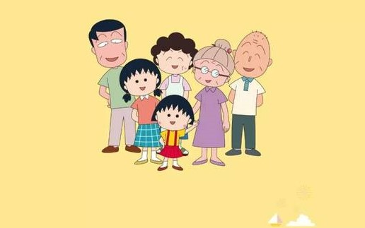
人物形象
身份背景
出生在1965年05月08日的日本静冈县清水市，9岁，樱杏子的妹妹，小林堇和樱宏志的女儿，友藏和樱小竹的孙女，平时在生活和学习中与家人、朋友、老师、同学之间朝夕相处中发生的一件件有趣的故事，这其中有关于亲情、爱心以及同学之间的友情。
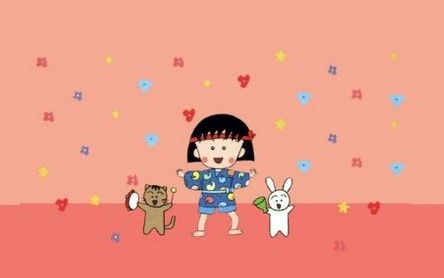相貌穿着
黑色的短头发的她，脸上有红红的腮红，喜欢穿白色的衬衫和红色的吊带裙，喜欢穿粉红色和红色的裙子或衣服，在出于餐厅、结婚典礼等场地，则会头发梳成丸子头。
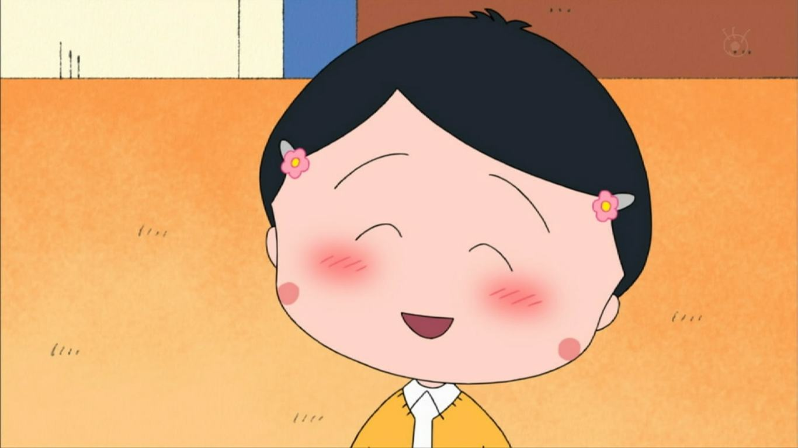性格特点
个性喜欢无理取闹、爱和姐姐争吵，性格开朗、乐观。平时爱看《Ribbon》漫画但不爱运动、耍笨耍宝不收拾房间、对功课临急抱佛脚，爱占便宜、贪钱、贪新鲜并粗心大意，是个拥有不少小缺点的女孩。
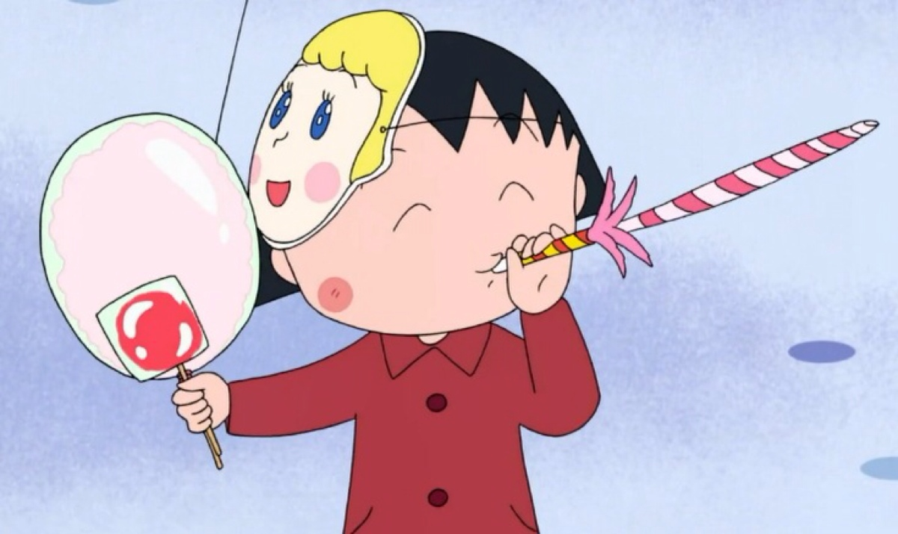生活
平常有点疏于的地方，但对有趣的事就会好奇。非常怕麻烦的事情，但也有好的地方。小丸子性格开朗、乐观。喜欢画画、小动物和植物。最喜欢的食物是布丁，汉堡，在学校里与花轮同学一起当小动物值日生，平时与好朋友小玉一起上学、放学，放假的时候一起玩耍。
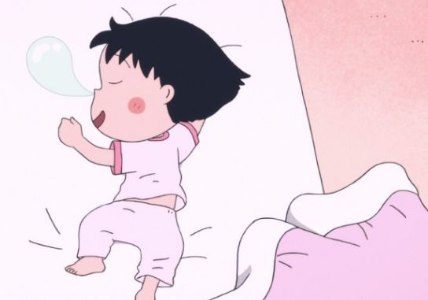不过她一直为当漫画家的梦想而坚持、也曾在班上仗义执言、爱护小动物、有侦探头脑、乐观的小女孩。偶像是山口百惠与山本琳达
人际关系
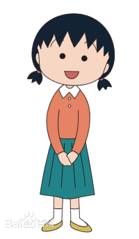 樱杏子
小丸子的姐姐，与小丸子读同一所小学的6年级，和小丸子的性格完全相反，较冷静成熟，但遇着郊游旅行和喜爱的明星时，就会手舞足蹈。爱编织，很讨厌运动。和小丸子常常吵架，但在小丸子遇到困难或危险时也会立刻挺身而出，最初的偶像是锦野明，后来喜欢西城秀树。
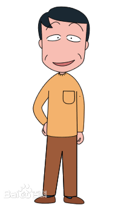樱宏志
小丸子的爸爸，是一个上班族，性格散漫、喜爱喝酒、嗜好钓鱼、看棒球比赛，有香港脚、喜欢取笑小丸子，不过内心里爱护小丸子，也是一个很容易满足的男人。因在清水市出生长大，所以认识很多人。年轻时的他和现在相差很远，爱吹口哨。
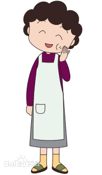小林谨
小丸子的妈妈，是一位典型的家庭主妇。生性吝啬，遇上大减价时会与姐姐陷入疯狂，与奶奶一样爱储起无用的杂物。厨艺了得，而且家中的大小事务也能做得妥妥当当，对于缝纫刺绣相当拿手。时常为小丸子的事而烦恼，也是小丸子的倾诉对象。最喜欢爸爸的口哨声。喜欢的花是郁金香。
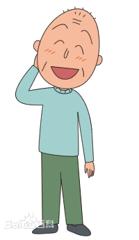樱友藏
小丸子的爷爷，溺爱小丸子，对她事事认同，所以常被小丸子利用。爱戴着草帽，拖着乌龟散步和想像力过于夸张。喜欢吃软软的东西，不喜欢吃柿子饼。有点老人痴呆（记性不好），但有时又会为想一件事想很久，口袋里戴上写着地址的卡片。
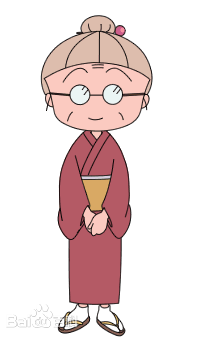樱小竹
小丸子的奶奶。生性节俭，内敛稳重，同时也是个慈祥的奶奶。对从前的习俗了解很多，与妈妈一样爱储起无用的杂物。时常和爷爷一起参加老人活动。最喜欢爷爷的老实。口头禅是“什么也可以补身，做药”和“我也活不了多久，最多再活三、五年”，不过常常都老当益壮。
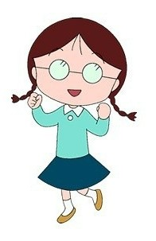穗波玉
小丸子形影不离的知己，性情文静、善良，温柔懂事，但与小丸子一块时就表现出傻气。班上跟小丸子一同坐在末座的小玉常常和她一起玩耍，也很喜欢帮助别人。家境小康，家中的大床是小丸子最羡慕的东西。每当困扰的时候心中就会出现一个阿尔卑斯少女塔咪；经常因为爸爸的不停地拍照而显得无奈，长大的模样曾经出现在他爸爸的脑海中。
角色经历
童年时期
在TV版动画里第二天就是母亲节了，小丸子想给妈妈准备礼物，但她全部的财产也才250日元，想找姐姐借却遭到了拒绝。无计可施的小丸子只好带上这笔钱来到百货店，看到很中意的东西，但那高昂的价格却把小丸子吓了一大跳。发现绝对买不起店里的任何东西，小丸子羞愧地低着头打算走出百货店。 此时一个亲切的声音在身后响起，她询问小丸子是不是在找什么东西，原来是百货店的店员小姐，小丸子不由自主把自己的烦恼告诉了对方，并紧紧地握着手上仅有的250日元，店员小姐微笑着告诉小丸子，只要在这里帮个忙打打小工就能赚到一个礼物，最后小丸子终于买到了自己想要的礼物，回到家心跳加速地准备把它送给妈妈。结果回去以后，不小心说漏了嘴，有一个一样的，小丸子很伤心，最后妈妈安慰她，两人快乐笑起来。
成年时期
在TV版樱桃小丸子第2部里详细说出小丸子幻想自己是花轮家的小孩，而花轮是自己家的小孩，最后她的愿望实现了，花轮同学为实现自己的梦想，努力学习，成为了漫画家，而小丸子，自己也成为了歌手及作曲家。